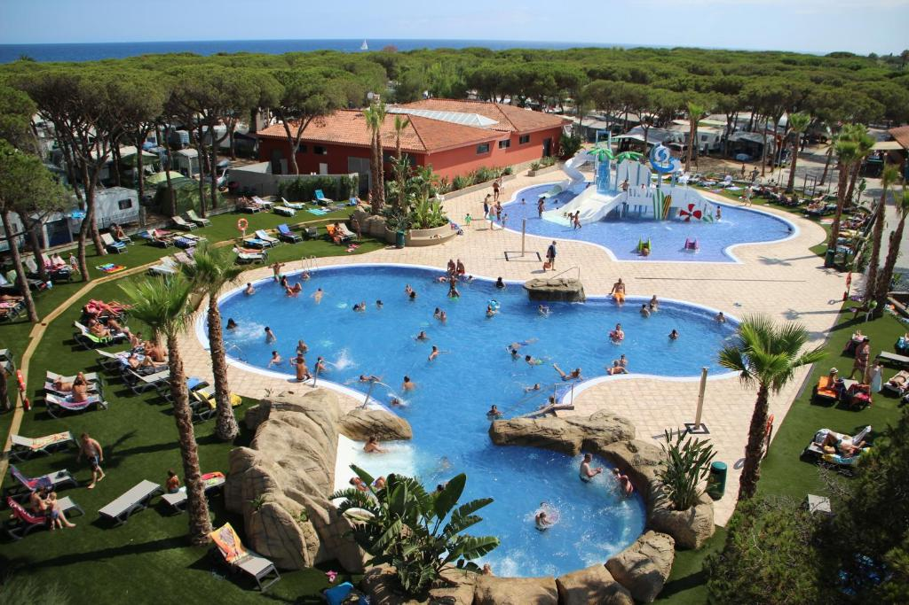
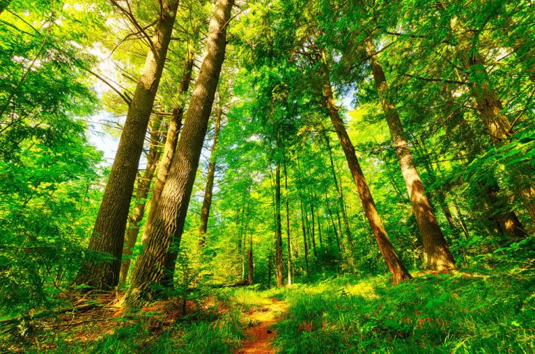
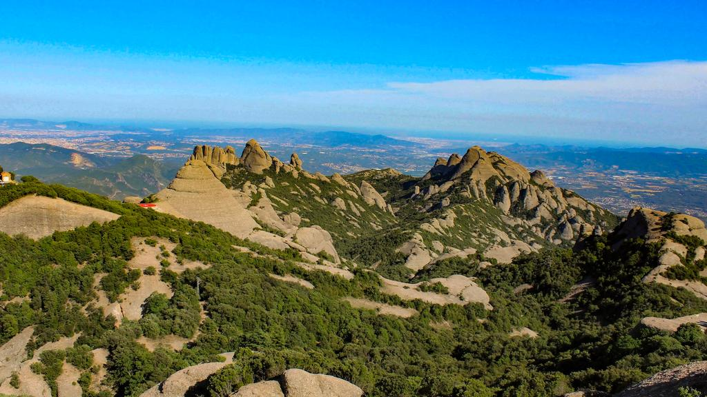

El meu estiu
Viatge
Aquest estiu he anat de càmping amb el meu grup d'amics durant quatre dies. El càmping es diu Bellaterra i està envoltat d'un entorn natural molt agradable. Durant aquests dies vam conviure tots junts, vam compartir moltes estones i vam poder desconnectar una mica de la rutina.
Al principi ens vam haver d'organitzar per repartir-nos les tasques i preparar les coses, però de seguida ens hi vam acostumar. M'ha agradat molt viure aquesta experiència perquè he pogut passar més temps amb els meus amics i conèixer-los encara millor fora de l'entorn habitual.

Activitats a l'aire lliure
Durant aquests quatre dies vam fer moltes activitats a l'aire lliure, com ara caminades, anar a la piscina i cuinar. Les caminades ens van permetre descobrir millor l'entorn i gaudir de la natura, mentre que a la piscina ens ho vam passar molt bé i vam poder refrescar-nos.
També vam cuinar junts i vam preparar els plats entre tots. Encara que de vegades no sortís tot perfecte, va ser divertit repartir-nos la feina i menjar després el que havíem preparat. Són moments senzills, però al final són els que es recorden més.

La muntanya
Aquest estiu he anat a la muntanya, concretament a la Mola, Sant Jeroni... M'agrada molt anar d'excursió perquè puc gaudir de la natura, respirar aire fresc i desconnectar una estona del soroll i de la rutina.
Caminar fins a dalt pot ser cansat, però m'agrada l'esforç perquè quan arribo al cim puc gaudir del paisatge i de la sensació d'haver aconseguit el repte. A més, estar envoltat de natura em fa sentir tranquil i em permet passar una bona estona.

Moments amb els amics
El millor del viatge va ser poder estar amb els meus amics durant tants dies seguits. Vam parlar, vam riure i vam compartir moltes anècdotes. A la nit ens quedàvem una estona junts explicant coses i recordant els moments més divertits del dia.
Aquest viatge m'ha deixat molt bons records i m'agradaria poder repetir una experiència semblant l'estiu que ve. No cal fer grans plans per passar-s'ho bé; de vegades, estar amb la gent que t'importa i gaudir del moment és més que suficient.